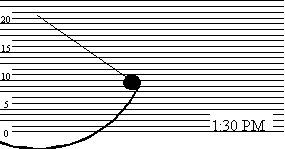
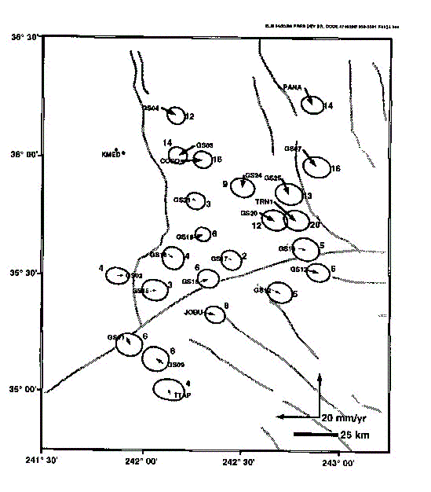

| Feature Article - June 1998 |
| by Do-While Jones |
Let's do an imaginary experiment. Let's hang a 1-pound ball from a 20-inch string in front of a background that has 1-inch horizontal lines ruled on it. Then let's point a camcorder at it, with its Time of Day feature turned on. Suppose it is 1 PM. We would see something like this:
Nothing happens for a half hour. The ball just hangs there. Then, at 1:30, we have one of our famous Ridgecrest earthquakes, which puts 10 inch-pounds of energy into the ball, and it starts swinging back and forth as shown below.

We continue video-taping the pendulum until the ball stops swinging. Then we decide to replay the video tape. A scientist happens to wander by when the tape is replaying the events that happened at 2:00 PM.
He notes that the ball swings up to the 7-inch mark, so it has 7 inch-pounds of energy. He continues to watch, and notices that the ball only swings up to the 6-inch mark at 2:10 PM.
From this he deduces it is losing one inch-pound of energy every 10 minutes. He predicts that the ball will be swinging up to the 5-inch mark when the time on the screen shows 2:20 PM, and he is right.
Can the scientist guess how high the ball was swinging in the past? He might correctly calculate that the ball was swinging up to the 10-inch mark at 1:30 PM. But if he tries to compute the magnitude at 1:00 PM, he will probably think that the ball was swinging up to the 13-inch mark. In fact, the ball was not moving at all at 1:00 PM.
The scientist might even calculate that the ball was swinging up to the 19-inch mark at noon. Clearly the pendulum could not have been swinging more than 20 inches high because the string is only 20 inches long, so the scientist can correctly conclude that the pendulum must have started swinging some time after 11:50 AM. But if the scientist doesn't watch any of the video tape before 2:00 PM, he can't determine exactly when the pendulum started swinging. Neither can he determine how high it was swinging to begin with, nor what started the pendulum swinging. For all he knows, a cat walked by at 1:50 PM, brushed the pendulum, and started it swinging 8 inches high.
Of course there is a reason why we have described this imaginary experiment. It shows that we can measure the process by which the pendulum is losing energy, and make some good predictions about how much energy it will have in the future. We cannot, however, determine when the pendulum started, or how much energy it had at the beginning, because the process that put the energy into the pendulum (which started it swinging) is not the same process that is taking energy out of the pendulum. An earthquake started the pendulum swinging. Friction (mostly atmospheric drag) is slowing it down. The second process tells us nothing about the first process.
All one can compute is the earliest possible time the current process could have been started. In our illustration, the scientist knows the pendulum must have started swinging before 2:00 PM (because that is the first time the scientist saw it swinging) and could not have been swinging before 11:50 AM (because the string would have to support compression, which a string can't do).
We can measure continental drift today. We can tell how fast South America is moving away from Africa. We can predict how far apart they will be a few years in the future. We cannot, however, tell how far apart they were in the past because we don't know when they began to separate, what caused them to separate, or how quickly they separated. All we see is the residual motion.
From November 1994 through April, 1996, The Naval Air Warfare Center Geothermal Program Office (Code 823G00D) measured differential movements of the Earth's crust in the Indian Wells Valley "using state-of-the-art Global Positioning System (GPS) measurements."1 Frank Monastero presented the slide shown below at the Global Positioning System (GPS) Conference held at the Naval Air Warfare Center, China Lake. The slide shows that two stations, GS01 and GS09, are moving almost directly toward each other at a rate of 12 mm/year. Station GS05 is moving southwest at 14 mm/year while GS07 is moving southeast at 16 mm/year, so they are separating by roughly 20 mm/year. Every station showed some movement.

Given this data, can one compute where the measurement stations were 75 million years ago? Were GS05 and GS07 really 1,500 kilometers closer together than they are today? They are only 75 kilometers apart now! (1,600 kilometers is about 1,000 miles.) Clearly, the motion measured today in the Indian Wells Valley hasn't been going on for millions of years.
This brings us to the evolutionists' Pangea myth. Evolutionists believe that long ago all the continents were contiguous. But 200 million years ago North and South America began to tear away from Europe and Africa. Now they are about 5,000 kilometers apart. That means the continents must have been moving apart at an average rate of about 25 mm/year.
Scientists, attempting to confirm the Pangea myth, have measured the distances between places in South America and Africa and have found relative motions on the order of 20 or 30 mm/year, which evolutionists claim as confirmation of the theory. But, as we have just seen, Navy scientists have found differential motion of that order of magnitude right here in our own valley without coming to the conclusion that our valley was 3,000 miles longer 200 million years ago.
Clearly, Terra Firma isn't very firm. Even places on the same continental plate move a few millimeters relative to each other every year. The Earth is just a ball of Jello, vibrating very slowly.
Evolutionists, Biblical creationists, and secular creationists generally agree that there is compelling evidence that Africa and South America were once joined. This issue is not controversial.
The topics of debate are, "When did they separate? Why did they separate? How fast did they separate?" The argument is about time. Is the evidence more consistent with a recent separation (thousands of years ago) or an ancient separation (hundreds of millions of years ago)?
It is hard to comprehend millions or billions of years. That makes it easy for evolutionists to talk about long periods of time without people questioning them. Let's try to put these time periods in terms that everyone (in Ridgecrest) can understand.
Imagine that you started a trip to Ridgecrest from some place very far to the east of here, a very long time ago. Suppose you moved at continental drift rates, say, 25.4 mm/year. Suppose you arrived at the streetlight at the southwest corner of Ridgecrest and China Lake Boulevards (next to the Bank of America) this morning.
Where would you have been during the Civil War? You would have been in the crosswalk. During the Revolutionary War you would have been in the crosswalk. When Columbus was discovering America, you would have just entered the crosswalk. When Christ was born, you would have been across the street, 56 yards east of the bank. Imagine moving 56 yards in 2,000 years. You won't make many first downs (let alone touchdowns) at that rate!
Now let's talk about millions and billions of years. One million years ago, you would have been just this side of Trona. Ten million years ago, you would have been in Las Vegas. One hundred million years ago, you would have been in Iowa. Two hundred million years ago, you would have been swimming in the Atlantic Ocean, just off the East Coast. One billion years ago you would have been in India. You could travel completely around the world 3 times in 4.6 billion years at 25.4 mm/year.
| Table I. The distance you can move at 25.4 mm/year. | ||
|---|---|---|
| 1 year | 1 inch | |
| 10 years | 10 inches | |
| 100 years | 8 feet | |
| 1,000 years | 83 feet | |
| 10,000 years | 830 feet | |
| 100,000 years | 1.6 miles | Almost to the county line |
| 1 million years | 16 miles | Almost to Trona |
| 10 million years | 160 miles | Almost to Las Vegas |
| 100 million years | 1,600 miles | Iowa |
| 1 billion years | 16,000 miles | India |
| 4.6 billion years | 71,000 miles | 3 times around the world |
With this understanding of how long 200 million years is, can one really believe that South America has been drifting that long while still keeping a coastline that matches the coastline of Africa? Would not the effects of erosion have distorted it beyond recognition in 200 million years?
The evolutionists' Pangea myth says that the southeastern portion on the United States (including the Mississippi River valley) was under water about 450 million years ago. During this time the sedimentary rock layers were supposed to have formed. Then, according to the legend, the United States rose above sea level 400 million years ago. For 400 million years, rain must have been falling on Iowa, Nebraska, Illinois, Ohio, Kentucky and other nearby states, washing away dirt and rock.
Where has this dirt and rock gone? If silt had been flowing down the Mississippi River for the past 400 million years, then the Gulf of Mexico would have been entirely filled by the Mississippi River delta. Instead, we find a delta that represents an accumulation of sediments only a few thousand years old. If there was another river from the central plains to an ocean, where was it? Where is its delta?
Evolutionists say mountains formed slowly over millions of years, starting from mere molehills. They have measured some peaks and found they are getting a few tens of millimeters higher each year. They accept by faith the premise that this process has been going on for tens (or hundreds) of thousands of years.
The next time you climb Mt. Whitney, stop for a moment at Trail Crest. Look off at Hitchcock Lakes, 1500 feet below you to the west. Look at Consultation Lake 1800 feet below you to the east. As you pick your way carefully along the narrow trail, with those steep vertical drops to your left and right, try to convince yourself that the rocks you are standing on rose up at a rate of ½ inch per year over a period of 36,000 years.
Is it not obvious that the rocks all around you were under tremendous pressure from the left and right, and must have been thrust upwards suddenly to relieve that pressure in a very short period of time? Do you see evidence of tens of thousands of years of erosion around Trail Crest?
Like the disclaimer on the cereal box says, "some settling may occur." Now the surface of the Earth is moving slowly to achieve the lowest possible energy state. Some places rise. Some places fall. Some places move east. Some move west. Small movements occur to relieve local areas of high stress. This current process is merely the natural reaction to the process that created the landscape we see today. It is not the process that created the landscape in the first place.
Mountain peaks were formed in a process that is similar to our pendulum illustration. A violent, unobserved process in the past, put a great deal of energy into the system. We now see small transfers of energy that tend to even out the energy.
In our fictional experiment, the pendulum was initially at rest. Then an earthquake started the pendulum swinging very rapidly. After a few seconds, the earthquake ended. Then the drag of the air on the pendulum caused it to swing less and less until it finally came to rest. A scientist could reasonably assume that the pendulum had not been swinging before 11:50 AM, but could not determine exactly when it started swinging.
When we look at continents or mountains, we can't tell exactly when they were formed. We can, however, see evidence that it could not have been millions of years ago.
| Quick links to | |
|---|---|
| Science Against Evolution Home Page |
Back issues of Disclosure (our newsletter) |
| Web Site of the Month |
Topical Index |
Footnote: